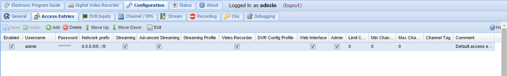
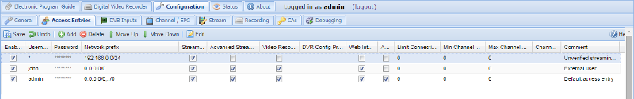

Configuration - Access Entries
Setting up access control is an important initial step as the system initially is wide open.
When Tvheadend verifies access is scan through all the enabled access control entries. The permission flags, streaming profiles, DVR config profiles, channel tags are combined for all matching access entries. An access entry is said to match if the username / password matches and the IP source address of the requesting peer is within the prefix.
The access rules are listed / edited in a grid.
-
To edit a cell, double click on it. After a cell is changed it will flags one of its corner to red to indicated that it has been changed. To commit these changes back to Tvheadend press the ‘Save changes’ button. In order to change a Checkbox cell you only have to click once in it.
-
To add a new entry, press the ‘Add entry’ button. The new (empty) entry will be created on the server but will not be in its enabled state. You can now change all the cells to the desired values, check the ‘enable’ box and then press ‘Save changes’ to activate the new entry.
-
To delete one or more entries, select the lines (by clicking once on them), and press the ‘Delete selected’ button. A popup will ask you to confirm your request.

Buttons
The buttons have the following functions:
Columns
The columns have the following functions:
Enabled : Enable this access control rule. Uncheck the box to disable.
Username : Login name to be used. If no username is required, this entry should contain a single asterisk (*).
Password : Login password to be used. If username is ‘*’ (unused), the password should be the same (i.e. match any username/password combination, or no username/password required).
Network prefix : IPv4 prefix for matching based on source IP address. If set to 0.0.0.0/0 it will match everything. The multiple networks can be delimited using comma or semicolon.
Web interface : Required for web user interface access. Also gives access to the EPG.
Admin : Enables access to the Configuration tab.
Streaming : Enables access to streaming functionality for HTTP (web).
Advanced Streaming : Enables access to advanced streaming function for HTTP (web) - like direct service or whole MPEG-TS stream (mux)..
HTSP Streaming : Enables access to streaming for the HTSP protocol (Movian, Kodi etc.).
Streaming Profile : Specify a streaming profile to be used when this user logs in; use the (default) stream if not specified.
Limit Connections : If set, this will limit the number of concurrent streaming connections and DVR sessions a user is permitted to have. 0=disabled
Video Recorder : Enables access to all video recording functions. This also include administration of the auto recordings.
HTSP DVR : Enables access to video recording functions for the HTSP protocol (Movian, Kodi etc.).
All DVR : Enable to access to DVR entries created by other users (read-only).
All DVR (rw) : Enable to access to DVR entries created by other users with the ability to remove the DVR entries.
Failed DVR : Enable to access to DVR entries which were not succesfuly recorded.
DVR Config Profile : If set, the user will only be able to use the DVR config profile equal to this value. Note that this field is unset when the DVR Config Profile is removed.
Min Channel Num : If non-zero, this sets the lower limit of the channels accessible by a user, i.e. the user will only be able to access channels where the channel number is equal to or greater than this value.
Max Channel Num : If non-zero, this sets the upper limit of the channels accessible by a user, i.e. the user will only be able to access channels where the channel number is equal to or less than this value.
Channel Tag : If set, the user will only be able to access channels containing this channel tag. Note that this field is unset when the channel tag is removed.
Comment : Allows the administrator to set a comment only visible in this editor. It does not serve any active purpose.
Let’s also take a look at an example:

First line gives clients originating from 192.168.0.0 - 192.168.0.255 network access to streaming functions. Typically you would use this for your local media players at home (All though Movian can prompt for username & password in its HTSP client)
The second line adds a user with world wide access who might want to modify recordings, etc, perhaps from the job, or mobile phone.
The third line provide admin access to the ‘admin’ user. As an extra precaution this user is only allowed to log in from the home network.